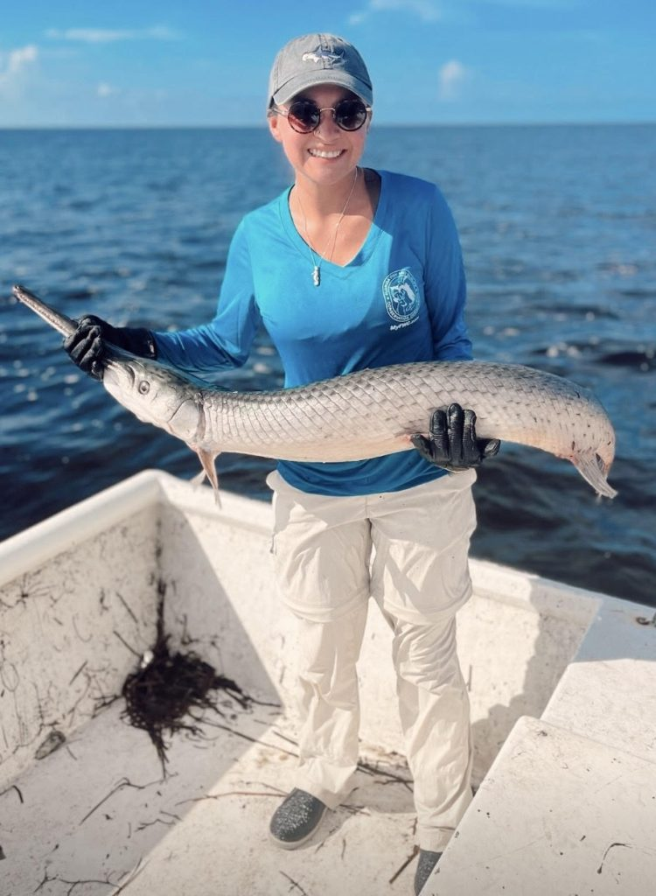

MSc Student
Makailyn Hernandez
Makailyn joined the lab in Fall 2024 to pursue an MSc after completing a BS at the University of West Florida. Makailyn is currently analyzing data on thermal stress and maternal effects and working on an additional experiment on the effects of acute thermal stress on behavior.